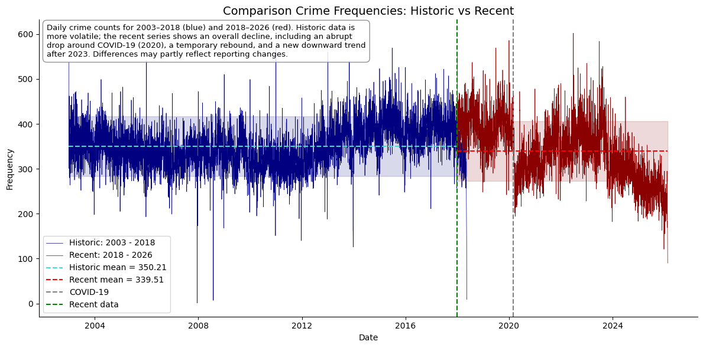

Two decades of police data reveal clear patterns: most crime concentrates in just a few categories,
some neighborhoods improved dramatically while others stayed challenging, and the shape of crime
changed in surprising ways. Here’s what the numbers really tell us — in plain language.
How We Collected and Organized the Crime Information

The analysis in this report is based on publicly available information from
the San Francisco Open Data Portal,
under the Public Safety section. One of the key resources offered to residents, researchers,
and policymakers is the dataset “Police Department Incident Report: 2018 to Present.”, and
“Police Department Incident Reports Historical 2003 to May 2018.”
This dataset provides a detailed record of police‑reported incidents across the city.
It includes essential information such as the date and time of the event, report details,
unique incident identifiers, police district, neighborhood, supervisor district, and
geographic coordinates. Together, these fields offer a clear picture of when and where
incidents occur, supporting transparency and informed decision‑making.
The data also classifies each report into an incident category. The most frequently recorded
categories include:
Figure 1. Less frequent but equally important categories—such as arson, embezzlement,
human trafficking, and homicide—are also included for a comprehensive overview.
By combining detailed classifications with geographic and temporal indicators, this dataset
serves as a valuable tool for understanding patterns, identifying emerging issues, and supporting
evidence‑based policy development for the residents of San Francisco. The criteria selection of table 1 crimes were:
Violence or threat to life.
Serious property loss or community harm.
Organized crime or high severity offenses.
Crimes that deeply affect public safety and social stability.
1. The Big Picture: Where Crime Clusters
Most incidents fall into a small number of categories (the tall peaks), but there is a long tail of less frequent yet serious crimes.
This shape tells us that focusing on a few key categories can have outsized impact.
When we look at the distribution of all reported crimes, we see strong clustering — a classic “few categories dominate” pattern.
This is the first insight for busy leaders: resources work best when targeted at the tallest peaks.
2. How Crime Changed Over Time
Hover over any line to see exact numbers. Notice how property crime dropped sharply after 2015 while violent crime remained more stubborn.
What changed in San Francisco during those years?
The time-series shape reveals clear trends: some crimes declined steadily, others showed sudden drops or rebounds.
These patterns are not random — they reflect real shifts in policing, policy, and city life.
3. Where Crime Happens: The Geographic Story
Darker areas show higher crime density. Zoom in and click any district to see which crime categories dominate there.
Some neighborhoods improved dramatically; others still need focused attention.
The geographic distribution is highly uneven. A few districts drive most of the volume, while others show very different shapes —
from heavy tails of occasional serious incidents to steady low-level activity.
Answer Your Own Questions
You’ve seen the overall story. Now explore the data yourself — choose what matters most to your role.
Focus on Violent Crime
See the shape of assaults, robberies, and homicides over time and by district.
Tip: Use the filters and hover tools to answer your specific questions.
All charts use the same clear color scheme so you can move between views easily.